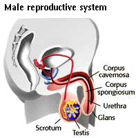
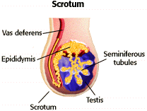

Human Reproduction Problem Set
Problem 3: Anatomy of the penis
Tutorial to help answer the question
Which of the following is not found in the male penis?
Tutorial |
Penis
|  |
The erectile tissue of the penis consists of two parallel cylindrical components: the corpus cavernosa near to top of the penis and underneath the corpus spongiosum through which passes the urethra. The glans, located at the tip of the penis, is covered with a thinner, more sensitive skin than the shaft of the penis. A portion of the foreskin that covers the glans of the penis is what is removed when circumcision is practiced. The seminiferous tubules are located in the testes. |
Testis
|  | Seminiferous tubules are tightly coiled tubules within the testes. They are the production site of about 30 million sperm each day. |


University of Arizona
Updated: July 15, 1999
Contact the Development Team
http://www.biology.arizona.edu
All contents copyright © 1996-99. All rights reserved.